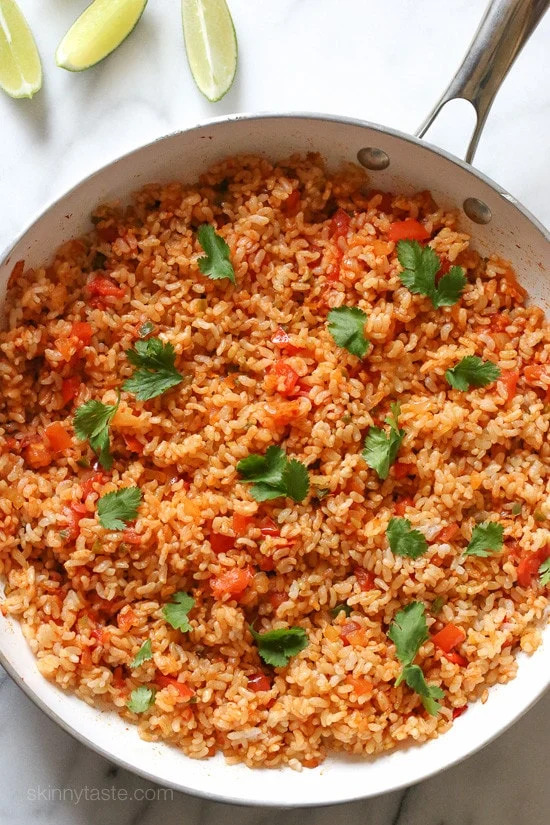

Quick Mexican Rice
This Quick Mexican Brown Rice is the perfect side dish that goes with everything from tacos, enchiladas, refried beans – you name it! This dish can be frozen beforehand in order to easily throw it in with anything else.

- Prep time: 40 minutes
- Total time: 40 minutes
Allergens
- Cilantro
Ingredients
Serves 4
| Amount | Ingredient | Comment |
|---|---|---|
| 2 cups | Brown rice | |
| 1 tsp | Cooking oil | |
| 1/2 | Medium-sized onion, finely diced | |
| 2 | Medium-sized tomatoes | |
| 50 ml | Fresh chilli jam | |
| 1 | Jalapeno, seeds removed | |
| 2 | Garlic cloves, minced | |
| 2 tbsp | Tomato paste/passata | |
| 1/4 tsp | Cumin | |
| 1/4 tsp | Smoked paprika | |
| 1/4 tsp | Cayenne pepper | |
| 1 tsp | Salt | |
| 1 tsp | Black pepper | |
| 1 | Lime | |
| 1 small handful | Cilantro (optional) |
Steps
- Cook the rice. In a rice cooker, this can take anywhere from 25-30m, so plan accordingly if you are preparing another dish in parallel.
- Heat the oil in a large skillet over medium-high heat. Once the oil is hot, add the onions, tomatoes and jalapeno and sauté (frequently stir) until just tender, about 2-3 minutes. (2 - 3 minutes)
- Add garlic and sauté. (1 minutes)
- Add the tomato paste, cumin, paprika, cayenne, salt and pepper. Stir to evenly coat the vegetables.
- Add the cooked rice, stir, and cook until heated through. (1 minutes)
- Serve with cilantro and lime wedges on the side.
Nutrition
| Nutrition | Amount |
|---|---|
| Calories | 200 kcal |
| Carbohydrates | 39 g |
| Protein | 5.0 g |
| Cholesterol | 17 mg |
| Sodium | 234 mg |
| Fiber | 3 g |
| Sugar | 2 g |